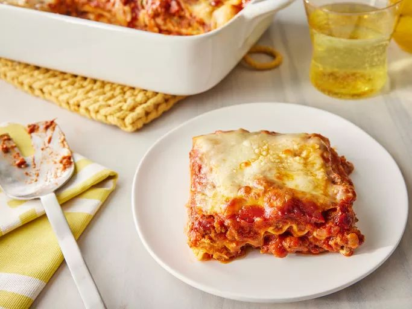

Lasagna

Description
Lasagna, also known as lasagne, is a type of pasta, possibly one of the oldest types, made in very wide, flat sheets. The same-named Italian dish is made of stacked layers of lasagna alternating with fillings such as ragù, béchamel sauce, vegetables, cheeses, and seasonings and spices. The dish may be topped with grated cheese, which becomes melted during baking. Typically cooked pasta is assembled with the other ingredients and then baked in an oven.
Make our most popular lasagna today to find out what all the fuss is about!
Ingredients
- Meat: This super meaty lasagna has sweet Italian sausage and lean ground beef.
- Onion and garlic: An onion and two cloves of garlic are cooked with the meat to add tons of flavor.
- Tomato products: You'll need a can of crushed tomatoes, two cans of tomato sauce, and two cans of tomato paste.
- Sugar: Two tablespoons of white sugar add subtle sweetness and enhance the flavor of the sauce.
- Spices and seasonings: This lasagna recipe is flavored with fresh parsley, dried basil leaves, salt, Italian seasoning, fennel seeds, and black pepper.
- Lasagna noodles: Use store-bought or homemade lasagna noodles.
- Cheeses: Parmesan, mozzarella, and ricotta cheese make this lasagna extra decadent.
- Egg: An egg helps bind the ricotta so it doesn't ooze out of the lasagna when you cut into it.
Steps
- Make the meat sauce.
- Cook the noodles.
- Make the ricotta mixture.
- Layer the lasagna.
- Cover with foil and bake.
- Let the lasagna rest before serving.
Back to Recipe Index